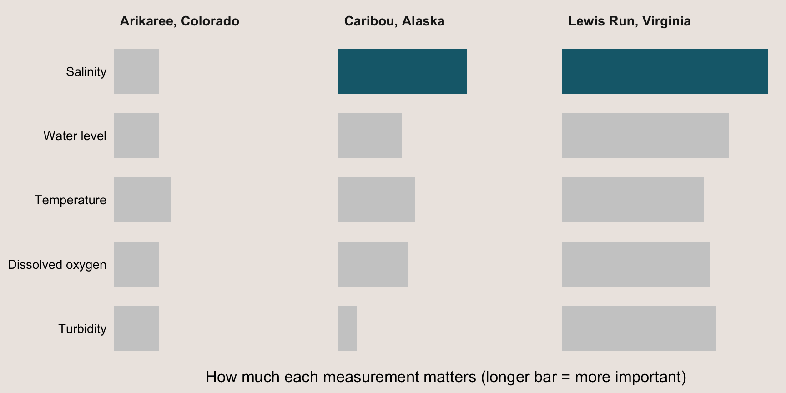

| River | Location | Climate | Surrounding land | Urban influence | How it flows |
|---|---|---|---|---|---|
| Arikaree | Colorado | Semi-arid (dry) | Grassland and agriculture | Rural | Dries up in summer |
| Caribou | Alaska | Subarctic (very cold) | Coniferous forest with partially frozen ground | Almost untouched | Frozen in winter |
| Lewis Run | Virginia | Temperate (mild) | Fields, pasture, woodlands and small ponds | Urban area nearby | Flows all year |
After a heavy summer storm, the river you manage might look the same, but nitrate can climb to as much as 100 times the current guideline (Gomez Isaza 2020). Unless someone happens to take a sample that day, no one will know.
Nitrate occurs naturally in rivers and streams at low levels, but human activities can push it far higher. It enters waterways from the air and from runoff that carries fertiliser, urban waste and debris. Too much of it fuels algae blooms, which can starve the water of oxygen and harm fish and other wildlife (Kermorvant et al. 2023).
The current Australian nitrate guideline was set at the level where half of test animals die, not where harm begins. Researchers have called for tighter limits, especially in summer and after heavy rain (Gomez Isaza 2020). But tighter limits require better measurements.
To protect wildlife, managers need to know not just how much nitrate is in a river, but when it rises. However, nitrate can rise and fall within a single day and shift quickly after rain, so occasional water samples collected by hand can easily miss the moments that matter (Kermorvant et al. 2023). A sample taken on a calm day might sit comfortably within the guideline while a spike after the next storm goes unrecorded. Nitrate sensors can track it continuously, but they are expensive, so they can only be placed at a few sites or for short periods. Meanwhile, cheaper sensors that continuously measure temperature, dissolved oxygen, salinity (electrical conductivity) and turbidity are increasingly used in river monitoring.
Could these cheaper sensors tell us something useful about nitrate? And does that hold for rivers in very different conditions?
To answer these questions, we can look at a 2023 study that tested exactly this idea (Kermorvant et al. 2023). The study was funded by the Australian Research Council (ARC) and involved several researchers based at Australian universities, including Monash, QUT, Macquarie and RMIT.
The researchers used data from three very different rivers in the United States, taken from the National Ecological Observatory Network (NEON), a free, open database of river sensor readings (Table 1). Choosing such different rivers is what lets us test our second question. The study used two years of data (January 2018 to December 2019). At each river, a nitrate sensor ran alongside cheaper and five increasingly common sensors that measure temperature, dissolved oxygen, salinity, turbidity and water level. The nitrate readings gave the researchers the true picture to compare against, so they could test how much of nitrate’s rise and fall the cheaper measurements could account for.
Arikaree’s dry summers and farming land are not unlike many inland Australian streams, and Lewis Run’s mix of farmland and nearby town is similar to a creek on the edge of a city. This does not mean the results carry straight over to Australian rivers, but it does suggest the approach is worth trying in conditions like ours.
Could these cheaper sensors tell us something useful about nitrate?
The short answer is yes. The researchers looked back over the two years of readings to see which of the cheaper measurements rose and fell along with nitrate. All five mattered at every river. Together with the time of day and season, the five measurements tracked most of nitrate’s ups and down, ranging from 75% at Arikaree to 85% at Lewis Run.
This doesn’t mean a nitrate sensor is no longer needed, each river’s model was built using real nitrate readings. However, it does help managers with limited budgets decide which sensors are worth buying and which measurements to take. Researchers also see potential, for using models like these to fill gaps in sensor records, or to estimate measurements where sensors are too expensive (Kermorvant et al. 2023).

Does that hold for rivers in very different conditions?
Partly. The same five measurements mattered in every river, but which one mattered most depended on the river (Figure 1). Salinity, for example, was more than three times as important at Lewis Run as at Arikaree. The same basic sensor kit is worth might be worth having, but each river needs its own model.
Cheaper sensors can tell us something useful about nitrate, tracking most of its ups and downs, although which measurement mattered most varied from river to river. This study only looked at how these measurements relate to nitrate in three US rivers, so it is not yet known how well the approach works in Australia, but it is a stepping stone for future work on tracking nitrate with cheaper sensors. If successful, river managers on a tight budget could get a clearer picture of nitrate in their rivers, and better guidelines could be put in place to protect wildlife.
References
Gomez Isaza, Daniel. 2020. “Anthropogenic Disturbances to Freshwater Taxa: Interactions Between Nitrate and Additional Stressors on Various Physiological Traits.” {PhD} {Thesis}, The University of Queensland. https://doi.org/10.14264/ea9709d.
Kermorvant, Claire, Benoit Liquet, Guy Litt, et al. 2023. “Understanding Links Between Water-Quality Variables and Nitrate Concentration in Freshwater Streams Using High Frequency Sensor Data.” PLOS ONE 18 (6): e0287640. https://doi.org/10.1371/journal.pone.0287640.